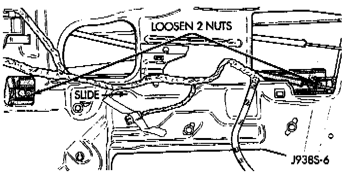
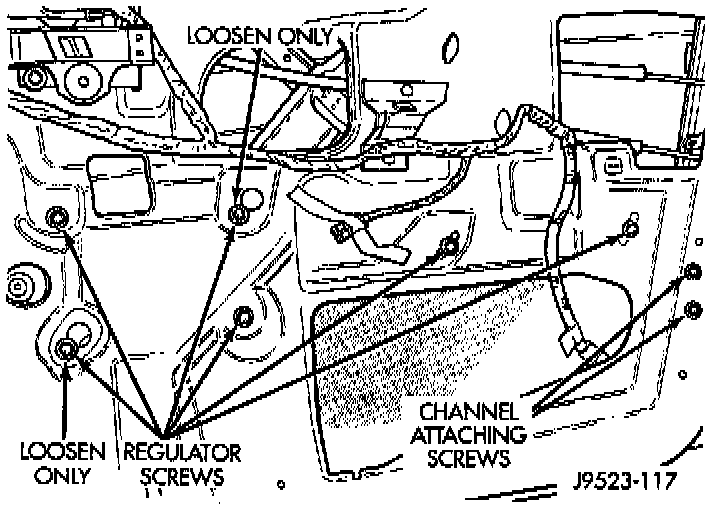

Front Door Window Regulator
1. Remove door trim panel and waterdam. For additional information, refer to Body and Frame/Doors, Hood, and Trunk/Door/Door Panel. DoorsFront Door Window Track:

2. Position window glass to access window track nuts.
3. Loosen 2 window track nuts and slide track off of the window.
Front Door Window Regulator:

4. Remove 4 window regulator retaining screws.
5. Lift window upward and separate it from regulator. Support window.
6. Remove window regulator from door.
7. Reverse removal procedure for installation.